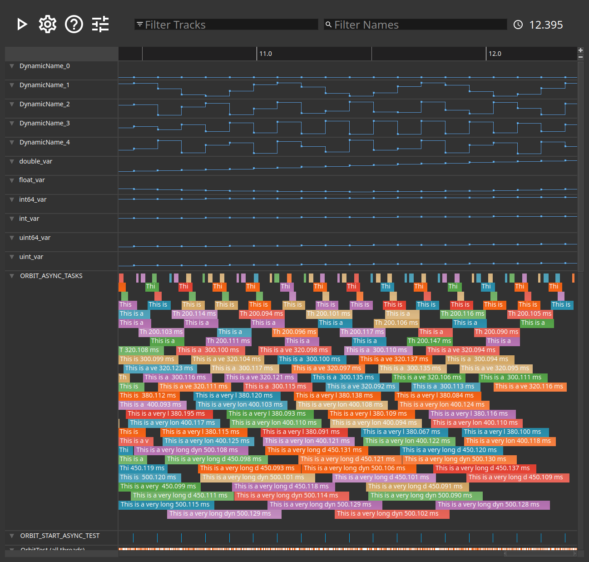
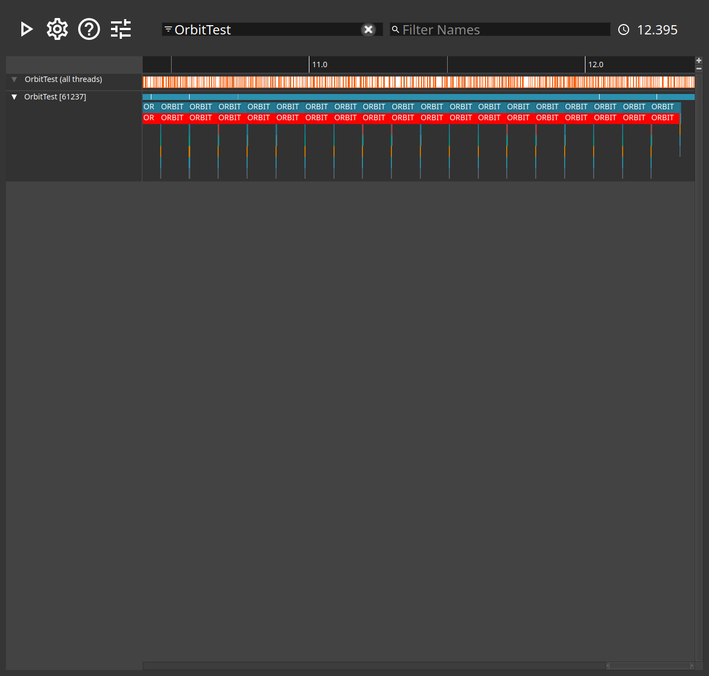

The capture window
A track per thread and per data source, on one shared timeline.
The capture window draws everything a capture recorded against time. Each thread gets a track; so does each other source of events, such as the scheduler or the GPU. Scrolling zooms the timeline, dragging pans it, and right-clicking a slice offers what can be done with it.
OrbitTest runs a handful of worker threads that call the same few functions in a loop, so its tracks are regular in a way a real application's rarely are.

